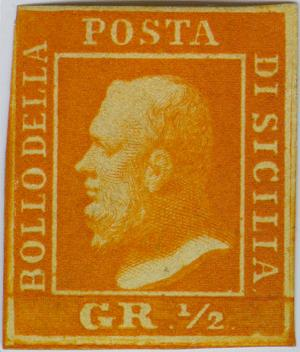
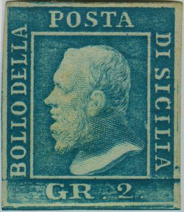
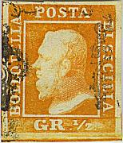
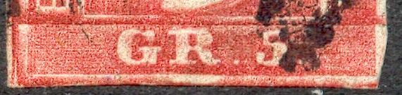
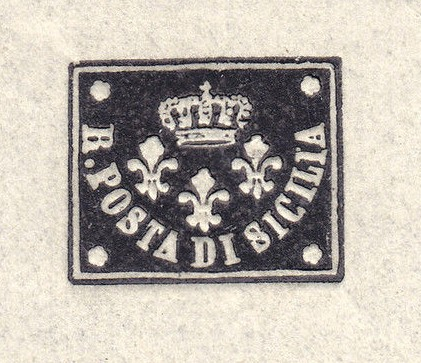

{kind=link}


{kind=link}



Sicilia - Sizilien
Return To Catalogue - Sicily forgeries, part 1 - Sicily forgeries, part 2 - Sicily forgeries, part 3 - Italy
Note: on my website many of the
pictures can not be seen! They are of course present in the
catalogue;
contact me if you want to purchase the catalogue.
Sicily is an island in the south of Italy.
With thanks to Lorenzo, (check his excellent website on Italian States! http://www.antichistati.com/800/index800.html) who kindly set some of his images at my disposal.
1/2 g orange 1 g olive 2 g blue 5 g red 10 g blue 20 g grey-blue 50 g red-brown
For the specialist: there are two plates of the 1/2 g and 5 g
stamps, three of the 1 g and 2 g stamps, and only one of all the
others (see Lorenzo's website for more information). Furthermore,
retouching of the plates created created some varieties. Also,
there is a variety of papers, gum and colour shades. There seems
to exist a misprint of 1/2 g dark blue thick paper (very rare, I
have never seen it, don't confuse it with an essay in light blue
on thin paper). These stamps are sometimes referred to as 'Bomba
Head' (the nickname of the King was 'Bomba')
The stamps of Sicily were only used from 1859 to 1860. From 1861
onwards the stamps of Italy were used.
Value of the stamps |
|||
vc = very common c = common * = not so common ** = uncommon |
*** = very uncommon R = rare RR = very rare RRR = extremely rare |
||
| Value | Unused | Used | Remarks |
| 1/2 g | RRR | RRR | Misprint: 1/2 g blue: RRR |
| 1 g | R | R | |
| 2 g | *** | *** | |
| 5 g | RR | RR | Shades of red |
| 10 g | RR | RR | |
| 20 g | RR | RR | |
| 50 g | RRR | RRR | |



This cancellation was specially designed, in a way not to touch the face of the king. The face of the king should be in the middle of the horseshoe. However, in most of the cancellations the horseshoe touches the face slightly.
According to 'The forged stamps of all countries' by J.Dorn: the lower part of the stamp in the genuine stamps (with the value label) is attached and a line can be seen where it was attached to the upper part of the stamp.

(Two genuine stamps)
The 'S' of 'POSTA' and the dot below the 'A'
There should be a small dot in the white line just below the 'A' of 'POSTA'. The 'S' of this word has its lower part very thin in the genuine stamps (see the image above).
Album Weeds distinguishes already seven different kinds of forgeries (in the early 19th century). For examples of Sicily forgeries, click here for part 1, or here for part 2, or here for Sicily forgeries, part 3
What is this? A stamp in a similar design (embossed center), with "F.RAGIUOLI" written at the bottom (essay?):

With 'R.FAGIUOLI' written at the bottom

Unadopted essay for Sicily (front and backside) embossed crown
and fleur-de-lis with inscription 'R.POSTA DI SICILIA'.
Some charity labels were issued after an earthquake in 1908. They have inscription 'SICILIA' and 'CALABRIA' and are triangular in shape. Apparently several countries issued these labels, since they exist in different currencies. Examples:
Stamps - Francobolli - Timbres-Poste - Briefmarken
{kind=link}